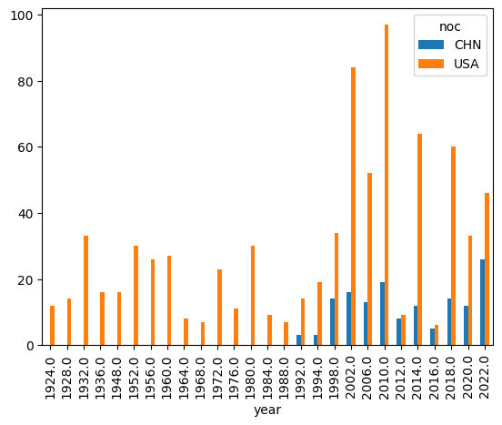
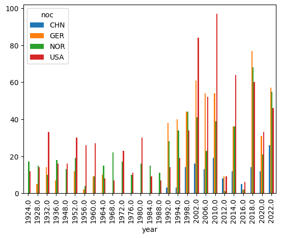

# insert code about china's accomplishments in winter olympics
# female or maleStory: Eileen Gu
Why has Eileen Gu garnered so much media attention? * is it because she is a very decorated athlete? * is it because of the current political climate? * is it because she’s kind of a super human?
she is a person of interest to me because we are very similar * she is from the bay area and went to highschool near me * we grew up skiing on the same ski team in Lake Tahoe * we are the same ethnic makeup
In 2022, she earned 2 gold medals in big air and halfpipe and 1 silver meal in slopestyle- becoming one of the biggest stars of the winter games
In 2026, so far she has earned a silver in big air, and slopestyle
She now has five Olympic medals total, the most ever by a female freestyle skier in Olympic history
She still has halfpipe, which she will compete in this Saturday, Feb 21st
Gold medals: She is the third most decorated WOMAN behind Wang Meng (4), and Zhou Yang (3) Total Medals: In terms of total medals with men and women, she is top 5 all-time
She competes in 3 different freeski disciplines, which makes her different than the others
Most of China’s medals come from short track speed skating, and most of their medals come from this sport
China did not win it’s first winter olympic gold medal until 2002
# look at the first time China won a gold medal in Winter Olympics
# compare that to when the US or Russia won their first
# plot the events they are good at (short track speed skating)How has eileen’s media attention differed in this environment compared to 2022 due to the political environment?
# look through bios to see what else you can addimport pandas as pd
import geopandas as gpd
import matplotlib.pyplot as pltwolympics_df = pd.read_csv('data/winter_olympics_medals.csv')
wolympics_df.shape--------------------------------------------------------------------------- FileNotFoundError Traceback (most recent call last) Cell In[2], line 1 ----> 1 wolympics_df = pd.read_csv('data/winter_olympics_medals.csv') 2 wolympics_df.shape File /opt/jupyterhub/share/jupyter/venv/python3_comm3180/lib/python3.12/site-packages/pandas/io/parsers/readers.py:873, in read_csv(filepath_or_buffer, sep, delimiter, header, names, index_col, usecols, dtype, engine, converters, true_values, false_values, skipinitialspace, skiprows, skipfooter, nrows, na_values, keep_default_na, na_filter, skip_blank_lines, parse_dates, date_format, dayfirst, cache_dates, iterator, chunksize, compression, thousands, decimal, lineterminator, quotechar, quoting, doublequote, escapechar, comment, encoding, encoding_errors, dialect, on_bad_lines, low_memory, memory_map, float_precision, storage_options, dtype_backend) 861 kwds_defaults = _refine_defaults_read( 862 dialect, 863 delimiter, (...) 869 dtype_backend=dtype_backend, 870 ) 871 kwds.update(kwds_defaults) --> 873 return _read(filepath_or_buffer, kwds) File /opt/jupyterhub/share/jupyter/venv/python3_comm3180/lib/python3.12/site-packages/pandas/io/parsers/readers.py:300, in _read(filepath_or_buffer, kwds) 297 _validate_names(kwds.get("names", None)) 299 # Create the parser. --> 300 parser = TextFileReader(filepath_or_buffer, **kwds) 302 if chunksize or iterator: 303 return parser File /opt/jupyterhub/share/jupyter/venv/python3_comm3180/lib/python3.12/site-packages/pandas/io/parsers/readers.py:1645, in TextFileReader.__init__(self, f, engine, **kwds) 1642 self.options["has_index_names"] = kwds["has_index_names"] 1644 self.handles: IOHandles | None = None -> 1645 self._engine = self._make_engine(f, self.engine) File /opt/jupyterhub/share/jupyter/venv/python3_comm3180/lib/python3.12/site-packages/pandas/io/parsers/readers.py:1904, in TextFileReader._make_engine(self, f, engine) 1902 if "b" not in mode: 1903 mode += "b" -> 1904 self.handles = get_handle( 1905 f, 1906 mode, 1907 encoding=self.options.get("encoding", None), 1908 compression=self.options.get("compression", None), 1909 memory_map=self.options.get("memory_map", False), 1910 is_text=is_text, 1911 errors=self.options.get("encoding_errors", "strict"), 1912 storage_options=self.options.get("storage_options", None), 1913 ) 1914 assert self.handles is not None 1915 f = self.handles.handle File /opt/jupyterhub/share/jupyter/venv/python3_comm3180/lib/python3.12/site-packages/pandas/io/common.py:881, in get_handle(path_or_buf, mode, encoding, compression, memory_map, is_text, errors, storage_options) 876 elif isinstance(handle, str): 877 # Check whether the filename is to be opened in binary mode. 878 # Binary mode does not support 'encoding' and 'newline'. 879 if ioargs.encoding and "b" not in ioargs.mode: 880 # Encoding --> 881 handle = open( 882 handle, 883 ioargs.mode, 884 encoding=ioargs.encoding, 885 errors=errors, 886 newline="", 887 ) 888 else: 889 # Binary mode 890 handle = open(handle, ioargs.mode) FileNotFoundError: [Errno 2] No such file or directory: 'data/winter_olympics_medals.csv'
wolympics_df.sample(20)| year | type | discipline | event | as | athlete_id | noc | team | place | tied | medal | |
|---|---|---|---|---|---|---|---|---|---|---|---|
| 46836 | 2022.0 | Winter | Figure Skating (Skating) | Team, Mixed (Olympic) | Michal Březina | 119015 | CZE | Czech Republic | 8.0 | False | NaN |
| 19542 | 1960.0 | Winter | Nordic Combined (Skiing) | Individual, Men (Olympic) | Arne Larsen | 89434 | NOR | NaN | 6.0 | False | NaN |
| 1550 | 1968.0 | Winter | Speed Skating (Skating) | 1,500 metres, Women (Olympic) | Paula Dufter | 80982 | FRG | NaN | 30.0 | False | NaN |
| 29921 | 1932.0 | Winter | Speed Skating (Skating) | 5,000 metres, Men (Olympic) | Edwin Wedge | 98855 | USA | NaN | NaN | False | NaN |
| 16821 | 1960.0 | Winter | Ice Hockey (Ice Hockey) | Ice Hockey, Men (Olympic) | Yuji Iwaoka | 87413 | JPN | Japan | 8.0 | False | NaN |
| 34350 | 1998.0 | Winter | Short Track Speed Skating (Skating) | 1,000 metres, Men (Olympic) | Feng Kai | 100246 | CHN | NaN | 18.0 | False | NaN |
| 17665 | 1992.0 | Winter | Speed Skating (Skating) | 1,500 metres, Men (Olympic) | Joakim Karlberg | 87789 | SWE | NaN | 26.0 | False | NaN |
| 20444 | 1988.0 | Winter | Biathlon | 20 kilometres, Men (Olympic) | Mikael Löfgren | 92003 | SWE | NaN | 51.0 | False | NaN |
| 34959 | 1998.0 | Winter | Ice Hockey (Ice Hockey) | Ice Hockey, Men (Olympic) | Rob Blake | 100558 | CAN | Canada | 4.0 | False | NaN |
| 29222 | 1994.0 | Winter | Cross Country Skiing (Skiing) | 10/15 kilometres Pursuit, Men (Olympic) | Giorgio Vanzetta | 98569 | ITA | NaN | 9.0 | False | NaN |
| 36917 | 2006.0 | Winter | Luge | Singles, Men (Olympic) | Tony Benshoof | 101261 | USA | NaN | 4.0 | False | NaN |
| 1748 | 1976.0 | Winter | Figure Skating (Skating) | Singles, Women (Olympic) | Christine Errath | 81036 | GDR | NaN | 3.0 | False | Bronze |
| 9247 | 1972.0 | Winter | Ice Hockey (Ice Hockey) | Ice Hockey, Men (Olympic) | Božidar Beravs | 84011 | YUG | Yugoslavia | 11.0 | False | NaN |
| 27822 | 2006.0 | Winter | Cross Country Skiing (Skiing) | 50 kilometres, Men (Olympic) | Carl Swenson | 98040 | USA | NaN | NaN | False | NaN |
| 52815 | 2014.0 | Winter | Ice Hockey (Ice Hockey) | Ice Hockey, Men (Olympic) | Simon Moser | 128520 | SUI | Switzerland | 9.0 | False | NaN |
| 26561 | 1988.0 | Winter | Bobsleigh (Bobsleigh) | Four, Men (Olympic) | Franz Siegl | 97522 | AUT | Austria 1 | 6.0 | False | NaN |
| 16917 | 1968.0 | Winter | Ice Hockey (Ice Hockey) | Ice Hockey, Men (Olympic) | Ivo Jan | 87455 | YUG | Yugoslavia | 9.0 | False | NaN |
| 61172 | 2020.0 | Winter | Ice Hockey (Ice Hockey) | Ice Hockey, Boys (YOG) | Dylan Ernst | 139706 | CAN | Canada | 3.0 | False | Bronze |
| 57902 | 2018.0 | Winter | Alpine Skiing (Skiing) | Slalom, Women (Olympic) | Alexia Schenkel | 138220 | THA | NaN | NaN | False | NaN |
| 59847 | 2020.0 | Winter | Cross Country Skiing (Skiing) | Cross, Boys (YOG) | Aleksey Loktionov | 138955 | RUS | NaN | 24.0 | False | NaN |
wolympics_df[wolympics_df['as'] == 'Eileen Gu']| year | type | discipline | event | as | athlete_id | noc | team | place | tied | medal | |
|---|---|---|---|---|---|---|---|---|---|---|---|
| 60517 | 2020.0 | Winter | Freestyle Skiing (Skiing) | Halfpipe, Girls (YOG) | Eileen Gu | 139214 | CHN | NaN | 1.0 | False | Gold |
| 60518 | 2020.0 | Winter | Freestyle Skiing (Skiing) | Slopestyle, Girls (YOG) | Eileen Gu | 139214 | CHN | NaN | 2.0 | False | Silver |
| 60519 | 2020.0 | Winter | Freestyle Skiing (Skiing) | Big Air, Girls (YOG) | Eileen Gu | 139214 | CHN | NaN | 1.0 | False | Gold |
| 60520 | 2022.0 | Winter | Freestyle Skiing (Skiing) | Halfpipe, Women (Olympic) | Eileen Gu | 139214 | CHN | NaN | 1.0 | False | Gold |
| 60521 | 2022.0 | Winter | Freestyle Skiing (Skiing) | Slopestyle, Women (Olympic) | Eileen Gu | 139214 | CHN | NaN | 2.0 | False | Silver |
| 60522 | 2022.0 | Winter | Freestyle Skiing (Skiing) | Big Air, Women (Olympic) | Eileen Gu | 139214 | CHN | NaN | 1.0 | False | Gold |
wolympics_df[wolympics_df['noc'] == 'CHN']| year | type | discipline | event | as | athlete_id | noc | team | place | tied | medal | |
|---|---|---|---|---|---|---|---|---|---|---|---|
| 322 | 1980.0 | Winter | Figure Skating (Skating) | Singles, Women (Olympic) | Bao Zhenghua | 80573 | CHN | NaN | 22.0 | False | NaN |
| 323 | 1984.0 | Winter | Figure Skating (Skating) | Singles, Women (Olympic) | Bao Zhenghua | 80573 | CHN | NaN | 22.0 | False | NaN |
| 975 | 1980.0 | Winter | Speed Skating (Skating) | 500 metres, Women (Olympic) | Cao Guifeng | 80788 | CHN | NaN | 21.0 | False | NaN |
| 976 | 1980.0 | Winter | Speed Skating (Skating) | 1,000 metres, Women (Olympic) | Cao Guifeng | 80788 | CHN | NaN | 27.0 | False | NaN |
| 977 | 1984.0 | Winter | Speed Skating (Skating) | 500 metres, Women (Olympic) | Cao Guifeng | 80788 | CHN | NaN | 25.0 | False | NaN |
| ... | ... | ... | ... | ... | ... | ... | ... | ... | ... | ... | ... |
| 63094 | 2022.0 | Winter | Short Track Speed Skating (Skating) | 1,000 metres, Men (Olympic) | Li Wenlong | 148133 | CHN | NaN | 2.0 | False | Silver |
| 63095 | 2022.0 | Winter | Short Track Speed Skating (Skating) | 5,000 metres Relay, Men (Olympic) | Li Wenlong | 148133 | CHN | People's Republic of China | 5.0 | False | NaN |
| 63096 | 2022.0 | Winter | Short Track Speed Skating (Skating) | 500 metres, Men (Olympic) | Sun Long | 148134 | CHN | NaN | 15.0 | False | NaN |
| 63097 | 2022.0 | Winter | Short Track Speed Skating (Skating) | 1,500 metres, Men (Olympic) | Sun Long | 148134 | CHN | NaN | 25.0 | False | NaN |
| 63098 | 2022.0 | Winter | Short Track Speed Skating (Skating) | 5,000 metres Relay, Men (Olympic) | Sun Long | 148134 | CHN | People's Republic of China | 5.0 | False | NaN |
1410 rows × 11 columns
china_medals = wolympics_df[
(wolympics_df['noc'] == 'CHN') &
(wolympics_df['medal'].notna())
]
china_medals| year | type | discipline | event | as | athlete_id | noc | team | place | tied | medal | |
|---|---|---|---|---|---|---|---|---|---|---|---|
| 1053 | 1994.0 | Winter | Figure Skating (Skating) | Singles, Women (Olympic) | Chen Lu | 80820 | CHN | NaN | 3.0 | False | Bronze |
| 1054 | 1998.0 | Winter | Figure Skating (Skating) | Singles, Women (Olympic) | Chen Lu | 80820 | CHN | NaN | 3.0 | False | Bronze |
| 3871 | 1992.0 | Winter | Short Track Speed Skating (Skating) | 500 metres, Women (Olympic) | Li Yan | 81673 | CHN | NaN | 2.0 | False | Silver |
| 7561 | 1998.0 | Winter | Short Track Speed Skating (Skating) | 500 metres, Women (Olympic) | Yang Yang (S) | 83084 | CHN | NaN | 2.0 | False | Silver |
| 7562 | 1998.0 | Winter | Short Track Speed Skating (Skating) | 1,000 metres, Women (Olympic) | Yang Yang (S) | 83084 | CHN | NaN | 2.0 | False | Silver |
| ... | ... | ... | ... | ... | ... | ... | ... | ... | ... | ... | ... |
| 63059 | 2022.0 | Winter | Snowboarding (Skiing) | Big Air, Men (Olympic) | Su Yiming | 148117 | CHN | NaN | 1.0 | False | Gold |
| 63069 | 2022.0 | Winter | Skeleton (Bobsleigh) | Skeleton, Men (Olympic) | Yan Wengang | 148122 | CHN | NaN | 3.0 | False | Bronze |
| 63091 | 2022.0 | Winter | Short Track Speed Skating (Skating) | 2,000 metres Relay, Mixed (Olympic) | Zhang Yuting | 148132 | CHN | People's Republic of China | 1.0 | False | Gold |
| 63093 | 2022.0 | Winter | Short Track Speed Skating (Skating) | 3,000 metres Relay, Women (Olympic) | Zhang Yuting | 148132 | CHN | People's Republic of China | 3.0 | False | Bronze |
| 63094 | 2022.0 | Winter | Short Track Speed Skating (Skating) | 1,000 metres, Men (Olympic) | Li Wenlong | 148133 | CHN | NaN | 2.0 | False | Silver |
145 rows × 11 columns
china_gold_medals = wolympics_df[
(wolympics_df['noc'] == 'CHN') &
(wolympics_df['medal'] == 'Gold')
]
china_gold_medals| year | type | discipline | event | as | athlete_id | noc | team | place | tied | medal | |
|---|---|---|---|---|---|---|---|---|---|---|---|
| 34172 | 2010.0 | Winter | Figure Skating (Skating) | Pairs, Mixed (Olympic) | Shen Xue | 100188 | CHN | Zhao Hongbo | 1.0 | False | Gold |
| 34176 | 2010.0 | Winter | Figure Skating (Skating) | Pairs, Mixed (Olympic) | Zhao Hongbo | 100189 | CHN | Shen Xue | 1.0 | False | Gold |
| 34239 | 2002.0 | Winter | Short Track Speed Skating (Skating) | 500 metres, Women (Olympic) | Yang Yang (A) | 100218 | CHN | NaN | 1.0 | False | Gold |
| 34240 | 2002.0 | Winter | Short Track Speed Skating (Skating) | 1,000 metres, Women (Olympic) | Yang Yang (A) | 100218 | CHN | NaN | 1.0 | False | Gold |
| 38189 | 2006.0 | Winter | Freestyle Skiing (Skiing) | Aerials, Men (Olympic) | Han Xiaopeng | 101601 | CHN | NaN | 1.0 | False | Gold |
| 41277 | 2006.0 | Winter | Short Track Speed Skating (Skating) | 500 metres, Women (Olympic) | Wang Meng | 109921 | CHN | NaN | 1.0 | False | Gold |
| 41281 | 2010.0 | Winter | Short Track Speed Skating (Skating) | 500 metres, Women (Olympic) | Wang Meng | 109921 | CHN | NaN | 1.0 | False | Gold |
| 41282 | 2010.0 | Winter | Short Track Speed Skating (Skating) | 1,000 metres, Women (Olympic) | Wang Meng | 109921 | CHN | NaN | 1.0 | False | Gold |
| 41284 | 2010.0 | Winter | Short Track Speed Skating (Skating) | 3,000 metres Relay, Women (Olympic) | Wang Meng | 109921 | CHN | People's Republic of China | 1.0 | False | Gold |
| 46827 | 2022.0 | Winter | Freestyle Skiing (Skiing) | Aerials, Men (Olympic) | Qi Guangpu | 119012 | CHN | NaN | 1.0 | False | Gold |
| 46875 | 2022.0 | Winter | Freestyle Skiing (Skiing) | Aerials, Women (Olympic) | Xu Mengtao | 119040 | CHN | NaN | 1.0 | False | Gold |
| 48755 | 2010.0 | Winter | Short Track Speed Skating (Skating) | 3,000 metres Relay, Women (Olympic) | Sun Linlin | 119804 | CHN | People's Republic of China | 1.0 | False | Gold |
| 48809 | 2010.0 | Winter | Short Track Speed Skating (Skating) | 3,000 metres Relay, Women (Olympic) | Zhang Hui | 119814 | CHN | People's Republic of China | 1.0 | False | Gold |
| 48814 | 2010.0 | Winter | Short Track Speed Skating (Skating) | 1,500 metres, Women (Olympic) | Zhou Yang | 119816 | CHN | NaN | 1.0 | False | Gold |
| 48815 | 2010.0 | Winter | Short Track Speed Skating (Skating) | 3,000 metres Relay, Women (Olympic) | Zhou Yang | 119816 | CHN | People's Republic of China | 1.0 | False | Gold |
| 48816 | 2014.0 | Winter | Short Track Speed Skating (Skating) | 1,500 metres, Women (Olympic) | Zhou Yang | 119816 | CHN | NaN | 1.0 | False | Gold |
| 49840 | 2012.0 | Winter | Figure Skating (Skating) | Singles, Boys (YOG) | Yan Han | 127563 | CHN | NaN | 1.0 | False | Gold |
| 49856 | 2014.0 | Winter | Speed Skating (Skating) | 1,000 metres, Women (Olympic) | Zhang Hong | 127569 | CHN | NaN | 1.0 | False | Gold |
| 49870 | 2022.0 | Winter | Short Track Speed Skating (Skating) | 2,000 metres Relay, Mixed (Olympic) | Fan Kexin | 127574 | CHN | People's Republic of China | 1.0 | False | Gold |
| 49872 | 2014.0 | Winter | Short Track Speed Skating (Skating) | 500 metres, Women (Olympic) | Li Jianrou | 127575 | CHN | NaN | 1.0 | False | Gold |
| 49896 | 2018.0 | Winter | Short Track Speed Skating (Skating) | 500 metres, Men (Olympic) | Wu Dajing | 127580 | CHN | NaN | 1.0 | False | Gold |
| 49901 | 2022.0 | Winter | Short Track Speed Skating (Skating) | 2,000 metres Relay, Mixed (Olympic) | Wu Dajing | 127580 | CHN | People's Republic of China | 1.0 | False | Gold |
| 54541 | 2016.0 | Winter | Figure Skating (Skating) | Team, Mixed Youth (YOG) | Li Xiangning | 136957 | CHN | Desire | 1.0 | False | Gold |
| 54546 | 2022.0 | Winter | Figure Skating (Skating) | Pairs, Mixed (Olympic) | Sui Wenjing | 136958 | CHN | Han Cong | 1.0 | False | Gold |
| 54552 | 2012.0 | Winter | Figure Skating (Skating) | Pairs, Mixed Youth (YOG) | Yu Xiaoyu | 136960 | CHN | Jin Yang | 1.0 | False | Gold |
| 54557 | 2022.0 | Winter | Figure Skating (Skating) | Pairs, Mixed (Olympic) | Han Cong | 136961 | CHN | Sui Wenjing | 1.0 | False | Gold |
| 54563 | 2012.0 | Winter | Figure Skating (Skating) | Pairs, Mixed Youth (YOG) | Jin Yang | 136963 | CHN | Yu Xiaoyu | 1.0 | False | Gold |
| 54602 | 2022.0 | Winter | Speed Skating (Skating) | 500 metres, Men (Olympic) | Gao Tingyu | 136976 | CHN | NaN | 1.0 | False | Gold |
| 54626 | 2022.0 | Winter | Short Track Speed Skating (Skating) | 2,000 metres Relay, Mixed (Olympic) | Qu Chunyu | 136983 | CHN | People's Republic of China | 1.0 | False | Gold |
| 54633 | 2022.0 | Winter | Short Track Speed Skating (Skating) | 2,000 metres Relay, Mixed (Olympic) | Ren Ziwei | 136984 | CHN | People's Republic of China | 1.0 | False | Gold |
| 54634 | 2022.0 | Winter | Short Track Speed Skating (Skating) | 1,000 metres, Men (Olympic) | Ren Ziwei | 136984 | CHN | NaN | 1.0 | False | Gold |
| 60517 | 2020.0 | Winter | Freestyle Skiing (Skiing) | Halfpipe, Girls (YOG) | Eileen Gu | 139214 | CHN | NaN | 1.0 | False | Gold |
| 60519 | 2020.0 | Winter | Freestyle Skiing (Skiing) | Big Air, Girls (YOG) | Eileen Gu | 139214 | CHN | NaN | 1.0 | False | Gold |
| 60520 | 2022.0 | Winter | Freestyle Skiing (Skiing) | Halfpipe, Women (Olympic) | Eileen Gu | 139214 | CHN | NaN | 1.0 | False | Gold |
| 60522 | 2022.0 | Winter | Freestyle Skiing (Skiing) | Big Air, Women (Olympic) | Eileen Gu | 139214 | CHN | NaN | 1.0 | False | Gold |
| 62279 | 2020.0 | Winter | Speed Skating (Skating) | Mass Start, Girls (YOG) | Yang Binyu | 140205 | CHN | NaN | 1.0 | False | Gold |
| 63059 | 2022.0 | Winter | Snowboarding (Skiing) | Big Air, Men (Olympic) | Su Yiming | 148117 | CHN | NaN | 1.0 | False | Gold |
| 63091 | 2022.0 | Winter | Short Track Speed Skating (Skating) | 2,000 metres Relay, Mixed (Olympic) | Zhang Yuting | 148132 | CHN | People's Republic of China | 1.0 | False | Gold |
china_gold_medals = wolympics_df[
(wolympics_df['noc'] == 'CHN') &
(wolympics_df['medal'] == 'Gold')
]
china_gold_medals = china_medals.sort_values(by='year')
china_gold_medals| year | type | discipline | event | as | athlete_id | noc | team | place | tied | medal | |
|---|---|---|---|---|---|---|---|---|---|---|---|
| 3871 | 1992.0 | Winter | Short Track Speed Skating (Skating) | 500 metres, Women (Olympic) | Li Yan | 81673 | CHN | NaN | 2.0 | False | Silver |
| 7567 | 1992.0 | Winter | Speed Skating (Skating) | 500 metres, Women (Olympic) | Ye Qiaobo | 83085 | CHN | NaN | 2.0 | False | Silver |
| 7568 | 1992.0 | Winter | Speed Skating (Skating) | 1,000 metres, Women (Olympic) | Ye Qiaobo | 83085 | CHN | NaN | 2.0 | False | Silver |
| 1053 | 1994.0 | Winter | Figure Skating (Skating) | Singles, Women (Olympic) | Chen Lu | 80820 | CHN | NaN | 3.0 | False | Bronze |
| 7687 | 1994.0 | Winter | Short Track Speed Skating (Skating) | 500 metres, Women (Olympic) | Zhang Yanmei | 83115 | CHN | NaN | 2.0 | False | Silver |
| ... | ... | ... | ... | ... | ... | ... | ... | ... | ... | ... | ... |
| 63059 | 2022.0 | Winter | Snowboarding (Skiing) | Big Air, Men (Olympic) | Su Yiming | 148117 | CHN | NaN | 1.0 | False | Gold |
| 63069 | 2022.0 | Winter | Skeleton (Bobsleigh) | Skeleton, Men (Olympic) | Yan Wengang | 148122 | CHN | NaN | 3.0 | False | Bronze |
| 63091 | 2022.0 | Winter | Short Track Speed Skating (Skating) | 2,000 metres Relay, Mixed (Olympic) | Zhang Yuting | 148132 | CHN | People's Republic of China | 1.0 | False | Gold |
| 63093 | 2022.0 | Winter | Short Track Speed Skating (Skating) | 3,000 metres Relay, Women (Olympic) | Zhang Yuting | 148132 | CHN | People's Republic of China | 3.0 | False | Bronze |
| 63094 | 2022.0 | Winter | Short Track Speed Skating (Skating) | 1,000 metres, Men (Olympic) | Li Wenlong | 148133 | CHN | NaN | 2.0 | False | Silver |
145 rows × 11 columns
china_and_usa_filter = wolympics_df['noc'].isin(['USA','CHN'])
medal_filter = -wolympics_df['medal'].isna()china_usa_medals_df = wolympics_df[china_and_usa_filter & medal_filter].groupby(['year','noc'])['medal'].size()china_usa_medals_df.unstack().plot(kind='bar')
countries_filter = wolympics_df['noc'].isin(['USA','CHN','NOR','GER'])
medal_filter = -wolympics_df['medal'].isna()countries_df = wolympics_df[countries_filter & medal_filter].groupby(['year','noc'])['medal'].size()countries_df.unstack().plot(kind='bar')
countries_df.unstack().plot(
kind='bar',
color=['#d62728', '#bdbdbd', '#969696', '#636363']
)
china_2022 = wolympics_df[
(wolympics_df['year'] == 2022) &
(wolympics_df['noc'] == 'CHN') &
(wolympics_df['medal'].notna())
]china_medal_counts = china_2022.groupby('as')['medal'].count()
china_medal_counts.sort_values(ascending=False)as
Eileen Gu 3
Fan Kexin 2
Qu Chunyu 2
Qi Guangpu 2
Ren Ziwei 2
Xu Mengtao 2
Zhang Yuting 2
Su Yiming 2
Gao Tingyu 1
Jia Zongyang 1
Li Wenlong 1
Han Cong 1
Han Yutong 1
Wu Dajing 1
Sui Wenjing 1
Yan Wengang 1
Zhang Chutong 1
Name: medal, dtype: int64ax = china_medal_counts.sort_values(ascending=False).plot(kind='bar')
for i, athlete in enumerate(china_medal_counts.sort_values(ascending=False).index):
if 'Eileen Gu' in athlete:
ax.patches[i].set_color('red')
else:
ax.patches[i].set_color('gray')
china_2022 = wolympics_df[
(wolympics_df['year'] == 2022) &
(wolympics_df['noc'] == 'CHN') &
(wolympics_df['medal'].notna())
]china_2022.groupby('as')['event'].unique()as
Eileen Gu [Halfpipe, Women (Olympic), Slopestyle, Women ...
Fan Kexin [2,000 metres Relay, Mixed (Olympic), 3,000 me...
Gao Tingyu [500 metres, Men (Olympic)]
Han Cong [Pairs, Mixed (Olympic)]
Han Yutong [3,000 metres Relay, Women (Olympic)]
Jia Zongyang [Team Aerials, Mixed (Olympic)]
Li Wenlong [1,000 metres, Men (Olympic)]
Qi Guangpu [Team Aerials, Mixed (Olympic), Aerials, Men (...
Qu Chunyu [2,000 metres Relay, Mixed (Olympic), 3,000 me...
Ren Ziwei [2,000 metres Relay, Mixed (Olympic), 1,000 me...
Su Yiming [Slopestyle, Men (Olympic), Big Air, Men (Olym...
Sui Wenjing [Pairs, Mixed (Olympic)]
Wu Dajing [2,000 metres Relay, Mixed (Olympic)]
Xu Mengtao [Team Aerials, Mixed (Olympic), Aerials, Women...
Yan Wengang [Skeleton, Men (Olympic)]
Zhang Chutong [3,000 metres Relay, Women (Olympic)]
Zhang Yuting [2,000 metres Relay, Mixed (Olympic), 3,000 me...
Name: event, dtype: objectchina_2022_individual = china_2022[
~china_2022['event'].str.contains('Relay|Team|Pairs', case=False, na=False)]china_2022_individual.groupby('as')['event'].unique()as
Eileen Gu [Halfpipe, Women (Olympic), Slopestyle, Women ...
Gao Tingyu [500 metres, Men (Olympic)]
Li Wenlong [1,000 metres, Men (Olympic)]
Qi Guangpu [Aerials, Men (Olympic)]
Ren Ziwei [1,000 metres, Men (Olympic)]
Su Yiming [Slopestyle, Men (Olympic), Big Air, Men (Olym...
Xu Mengtao [Aerials, Women (Olympic)]
Yan Wengang [Skeleton, Men (Olympic)]
Name: event, dtype: objectevent_counts = china_2022_individual.groupby('as')['event'].nunique()
event_counts[event_counts > 1]as
Eileen Gu 3
Su Yiming 2
Name: event, dtype: int64medals_2022 = wolympics_df[
(wolympics_df['year'] == 2022) &
(wolympics_df['medal'].notna())
]
medals_2022_individual = medals_2022[
~medals_2022['event'].str.contains('Relay|Team|Pairs', case=False, na=False)
]global_event_counts = (
medals_2022_individual
.groupby('as')['event']
.nunique()
.sort_values(ascending=False)
)
global_event_counts.head(10)as
Marte Olsbu Røiseland 4
Miho Takagi 3
Quentin Fillon Maillet 3
Suzanne Schulting 3
Aleksandr Bolshunov 3
Irene Schouten 3
Johannes Thingnes Bø 3
Eileen Gu 3
Therese Johaug 3
Tarjei Bø 2
Name: event, dtype: int64global_event_counts[global_event_counts >= 3]as
Marte Olsbu Røiseland 4
Miho Takagi 3
Quentin Fillon Maillet 3
Suzanne Schulting 3
Aleksandr Bolshunov 3
Irene Schouten 3
Johannes Thingnes Bø 3
Eileen Gu 3
Therese Johaug 3
Name: event, dtype: int64global_event_counts.value_counts().sort_index()event
1 320
2 33
3 8
4 1
Name: count, dtype: int64global_event_counts.value_counts().sort_index().plot(kind='bar')
bios = pd.read_csv('data/bios.csv')
bios.head()| athlete_id | name | born_date | born_city | born_region | born_country | NOC | height_cm | weight_kg | died_date | |
|---|---|---|---|---|---|---|---|---|---|---|
| 0 | 1 | Jean-François Blanchy | 1886-12-12 | Bordeaux | Gironde | FRA | France | NaN | NaN | 1960-10-02 |
| 1 | 2 | Arnaud Boetsch | 1969-04-01 | Meulan | Yvelines | FRA | France | 183.0 | 76.0 | NaN |
| 2 | 3 | Jean Borotra | 1898-08-13 | Biarritz | Pyrénées-Atlantiques | FRA | France | 183.0 | 76.0 | 1994-07-17 |
| 3 | 4 | Jacques Brugnon | 1895-05-11 | Paris VIIIe | Paris | FRA | France | 168.0 | 64.0 | 1978-03-20 |
| 4 | 5 | Albert Canet | 1878-04-17 | Wandsworth | England | GBR | France | NaN | NaN | 1930-07-25 |
bios[bios['name'] == 'Eileen Gu']| athlete_id | name | born_date | born_city | born_region | born_country | NOC | height_cm | weight_kg | died_date | |
|---|---|---|---|---|---|---|---|---|---|---|
| 135995 | 139214 | Eileen Gu | 2003-09-03 | San Francisco | California | USA | People's Republic of China | NaN | NaN | NaN |
bios = pd.read_csv('data/bios.csv')